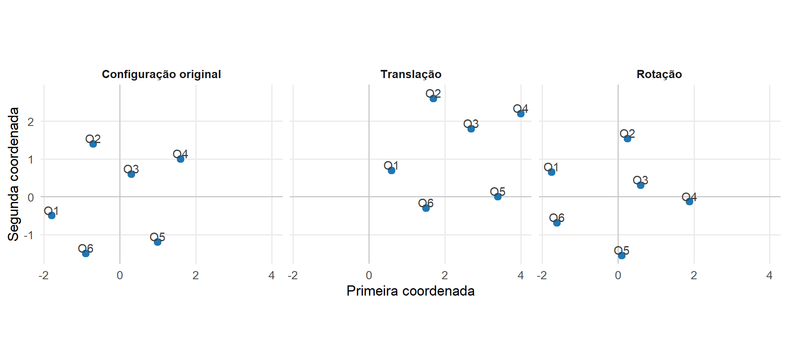
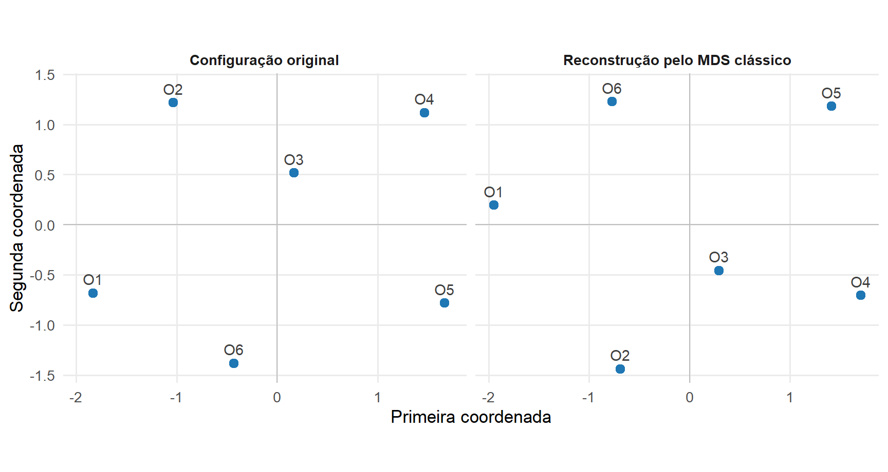
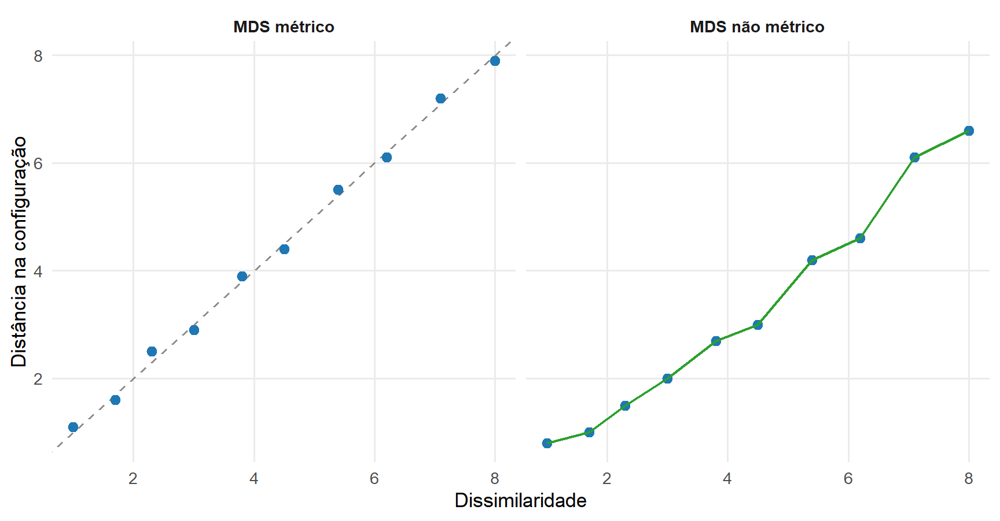

17 Formulação do Escalonamento Multidimensional
O Escalonamento Multidimensional, ou MDS, representa relações de dissimilaridade entre objetos por meio de coordenadas em um espaço geométrico. A matriz de entrada pode ser a mesma utilizada na Análise de Agrupamentos, mas o objetivo muda: em vez de formar grupos, procura-se construir uma configuração cujas distâncias representem as dissimilaridades observadas.
No MDS clássico, a relação entre distâncias euclidianas e produtos internos permite reconstruir uma matriz de Gram a partir das dissimilaridades. A decomposição espectral dessa matriz fornece as coordenadas da configuração (Gower, 1966; Torgerson, 1952).
Os elementos principais da formulação são apresentados na Tabela 17.1.
| Elemento | Objeto matemático | Papel no MDS |
|---|---|---|
| Informação de entrada | \(\boldsymbol{\Delta}=(\delta_{ij})\) | registra as dissimilaridades entre os objetos |
| Configuração | \(\mathbf X_{\mathrm{MDS},k}\in\mathbb R^{n\times k}\) | fornece coordenadas aos objetos |
| Distâncias configuracionais | \(d_{ij}\) | medem a separação entre os pontos reconstruídos |
| Produtos internos | \(\mathbf G\) | descrevem a geometria da configuração centralizada |
| Solução clássica | decomposição espectral de \(\mathbf G\) | produz as coordenadas principais |
17.1 O problema de reconstrução geométrica
Considere \(n\) objetos para os quais estão disponíveis dissimilaridades
\[ \delta_{ij}, \qquad i,j=1,\ldots,n. \]
A noção de dissimilaridade foi introduzida em Definição 16.1. Neste capítulo, consideraremos inicialmente uma matriz simétrica
\[ \boldsymbol{\Delta} = \left( \delta_{ij} \right) \in \mathbb R^{n\times n}, \]
com
\[ \delta_{ij} \geq 0, \]
\[ \delta_{ii} = 0 \]
e
\[ \delta_{ij} = \delta_{ji}. \]
Não se exige, neste ponto, que objetos distintos apresentem dissimilaridade estritamente positiva nem que \(\boldsymbol{\Delta}\) satisfaça a desigualdade triangular. Essas propriedades passam a ser relevantes quando se deseja interpretar a dissimilaridade como uma distância métrica.
O objetivo é encontrar pontos
\[ \mathbf x_1^{(\mathrm{MDS})}, \ldots, \mathbf x_n^{(\mathrm{MDS})} \in \mathbb R^k \]
e reuni-los nas linhas da configuração
\[ \mathbf X_{\mathrm{MDS},k} = \begin{pmatrix} \mathbf x_1^{(\mathrm{MDS})\top}\\ \vdots\\ \mathbf x_n^{(\mathrm{MDS})\top} \end{pmatrix} \in \mathbb R^{n\times k}. \tag{17.1}\]
A distância euclidiana entre dois pontos da configuração é
\[ d_{ij} \left( \mathbf X_{\mathrm{MDS},k} \right) = \left\| \mathbf x_i^{(\mathrm{MDS})} - \mathbf x_j^{(\mathrm{MDS})} \right\|, \tag{17.2}\]
utilizando a distância definida em Definição 1.13.
Uma representação euclidiana exata ocorre quando
\[ d_{ij} \left( \mathbf X_{\mathrm{MDS},k} \right) = \delta_{ij} \]
para todos os pares de objetos.
Em muitos problemas, essa igualdade não pode ser obtida na dimensão escolhida. Em outros, pode não existir uma configuração euclidiana exata em dimensão alguma. A representação passa então a ser aproximada, e o significado dessa aproximação dependerá da formulação adotada.
A distinção entre entrada e saída é sintetizada na Tabela 17.2.
| Quantidade | Natureza | Interpretação |
|---|---|---|
| \(\delta_{ij}\) | observada ou fornecida | dissimilaridade entre os objetos \(i\) e \(j\) |
| \(\mathbf x_i^{(\mathrm{MDS})}\) | construída pela técnica | coordenadas do objeto \(i\) |
| \(d_{ij}\) | derivada da configuração | distância entre os pontos reconstruídos |
O problema do MDS é relacional. Não é necessário conhecer originalmente as variáveis que deram origem às diferenças entre os objetos. Uma matriz de dissimilaridades pode ser calculada a partir de uma matriz de dados, obtida por comparações entre objetos ou fornecida diretamente pelo problema analisado.
Essa característica distingue o MDS da ACP. A ACP parte de coordenadas das observações e constrói outra representação dessas mesmas observações. O MDS pode partir somente das relações entre pares de objetos e procurar coordenadas compatíveis com essas relações.
17.2 Configuração e indeterminações geométricas
Uma matriz de distâncias não determina a posição absoluta nem a orientação absoluta de uma configuração no espaço. Algumas transformações modificam as coordenadas sem modificar as distâncias entre os pontos.
17.2.1 Translação
Considere uma configuração
\[ \mathbf X_{\mathrm{MDS},k} \]
e um vetor
\[ \mathbf a \in \mathbb R^k. \]
A translação comum de todos os pontos produz
\[ \mathbf x_i^{*} = \mathbf x_i^{(\mathrm{MDS})} + \mathbf a. \]
As diferenças permanecem inalteradas:
\[ \mathbf x_i^{*} - \mathbf x_j^{*} = \mathbf x_i^{(\mathrm{MDS})} - \mathbf x_j^{(\mathrm{MDS})}. \]
Consequentemente,
\[ \left\| \mathbf x_i^{*} - \mathbf x_j^{*} \right\| = \left\| \mathbf x_i^{(\mathrm{MDS})} - \mathbf x_j^{(\mathrm{MDS})} \right\|. \]
Essa propriedade é um caso da preservação das distâncias por centralização e translação estabelecida em Proposição 4.15.
17.2.2 Transformações ortogonais
Considere agora
\[ \mathbf O \in \mathbb R^{k\times k} \]
ortogonal e a configuração transformada
\[ \mathbf X_{\mathrm{MDS},k}^{*} = \mathbf X_{\mathrm{MDS},k} \mathbf O. \]
A diferença entre duas linhas transformadas é
\[ \left( \mathbf x_i^{(\mathrm{MDS})} - \mathbf x_j^{(\mathrm{MDS})} \right)^\top \mathbf O. \]
Como transformações ortogonais preservam normas e distâncias por Proposição 4.10,
\[ d_{ij} \left( \mathbf X_{\mathrm{MDS},k}^{*} \right) = d_{ij} \left( \mathbf X_{\mathrm{MDS},k} \right). \tag{17.3}\]
Rotações e reflexões modificam a orientação da configuração sem modificar sua estrutura de distâncias.
A Figura 17.1 mostra uma configuração e duas representações obtidas por transformações que preservam todas as distâncias entre os objetos.
A localização e a orientação dos eixos não são determinadas pelas distâncias. O objeto geométrico identificado pela informação de distâncias é, portanto, uma classe de configurações equivalentes por translação e transformação ortogonal.
A centralização, introduzida a seguir, escolhe um representante dessa classe quanto à translação. Ela não elimina a indeterminação por rotações ou reflexões.
No MDS clássico, uma mudança global de escala não constitui a mesma indeterminação. Se
\[ \mathbf X_{\mathrm{MDS},k}^{*} = c \mathbf X_{\mathrm{MDS},k}, \]
então
\[ d_{ij}^{*} = |c|d_{ij}. \]
Quando os valores de \(\boldsymbol{\Delta}\) possuem escala fixada, essa transformação modifica as distâncias que se pretende reproduzir e, portanto, modifica o problema. A questão da escala assumirá outra forma nas formulações não métricas, nas quais a informação principal pode estar na ordenação das dissimilaridades.
17.2.3 Centralização da configuração
Como a translação não altera as distâncias, pode-se escolher uma origem conveniente sem perda da informação relacional.
No Módulo 2, a matriz de centralização foi utilizada para escrever
\[ \mathbf X_c = \mathbf H_n \mathbf X \]
em Equação 8.58, com
\[ \mathbf H_n = \mathbf I_n - \frac1n \mathbf1_n \mathbf1_n^\top. \]
No MDS, a mesma matriz será utilizada para escolher, entre as configurações equivalentes por translação, aquela cujo centroide está na origem.
Definição 17.1 (Configuração centralizada no MDS) Uma configuração
\[ \mathbf X_{\mathrm{MDS},k} \in \mathbb R^{n\times k} \]
é centralizada quando
\[ \mathbf1_n^\top \mathbf X_{\mathrm{MDS},k} = \mathbf0^\top. \tag{17.4}\]
Se uma configuração não satisfaz essa condição, sua versão centralizada é
\[ \mathbf X_{\mathrm{MDS},k,c} = \mathbf H_n \mathbf X_{\mathrm{MDS},k}. \]
Pela propriedade de Proposição 4.15, a centralização não modifica as distâncias entre suas linhas.
A condição em Equação 17.4 não cria uma nova geometria. Ela fixa apenas a indeterminação de translação, escolhendo a configuração cujo centroide coincide com a origem.
17.3 Da distância ao produto interno
A solução clássica do MDS combina a distância euclidiana definida em Definição 1.13 com a matriz de Gram de Definição 3.18 para converter informação sobre distâncias em informação sobre produtos internos.
Considere uma configuração centralizada
\[ \mathbf X_{\mathrm{MDS}} \in \mathbb R^{n\times r}, \]
e sua matriz de Gram
\[ \mathbf G = \mathbf X_{\mathrm{MDS}} \mathbf X_{\mathrm{MDS}}^\top. \tag{17.5}\]
O elemento
\[ g_{ij} = \mathbf x_i^{(\mathrm{MDS})\top} \mathbf x_j^{(\mathrm{MDS})} \]
é o produto interno entre os pontos \(i\) e \(j\).
A distância quadrática entre esses pontos satisfaz
\[ \begin{aligned} d_{ij}^2 &= \left\| \mathbf x_i^{(\mathrm{MDS})} - \mathbf x_j^{(\mathrm{MDS})} \right\|^2 \\ &= \mathbf x_i^{(\mathrm{MDS})\top} \mathbf x_i^{(\mathrm{MDS})} + \mathbf x_j^{(\mathrm{MDS})\top} \mathbf x_j^{(\mathrm{MDS})} - 2 \mathbf x_i^{(\mathrm{MDS})\top} \mathbf x_j^{(\mathrm{MDS})} \\ &= g_{ii} + g_{jj} - 2g_{ij}. \end{aligned} \tag{17.6}\]
A matriz de Gram determina, portanto, todas as distâncias euclidianas da configuração.
O MDS clássico utiliza essa relação no sentido inverso: parte das distâncias ou dissimilaridades fornecidas e reconstrói uma matriz que poderá ser interpretada como matriz de Gram quando forem satisfeitas as condições geométricas apropriadas.
17.3.1 Matriz das dissimilaridades quadráticas
Defina
\[ \boldsymbol{\Delta}^{(2)} = \left( \delta_{ij}^2 \right). \tag{17.7}\]
Quando \(\boldsymbol{\Delta}\) corresponde às distâncias de uma configuração euclidiana centralizada, considere o vetor formado pela diagonal de sua matriz de Gram,
\[ \mathbf g = \begin{pmatrix} g_{11}\\ \vdots\\ g_{nn} \end{pmatrix}. \]
A identidade em Equação 17.6 pode então ser escrita matricialmente como
\[ \boldsymbol{\Delta}^{(2)} = \mathbf g \mathbf1_n^\top + \mathbf1_n \mathbf g^\top - 2\mathbf G. \tag{17.8}\]
Essa expressão contém os produtos internos e os termos associados às normas individuais dos pontos. A centralização permite eliminar os dois primeiros termos.
Como
\[ \mathbf H_n \mathbf1_n = \mathbf0, \]
tem-se
\[ \mathbf H_n \mathbf g \mathbf1_n^\top \mathbf H_n = \mathbf0 \]
e
\[ \mathbf H_n \mathbf1_n \mathbf g^\top \mathbf H_n = \mathbf0. \]
Além disso, como a configuração é centralizada,
\[ \mathbf1_n^\top \mathbf X_{\mathrm{MDS}} = \mathbf0^\top, \]
e, portanto,
\[ \mathbf G \mathbf1_n = \mathbf X_{\mathrm{MDS}} \mathbf X_{\mathrm{MDS}}^\top \mathbf1_n = \mathbf0. \]
Da mesma forma,
\[ \mathbf1_n^\top \mathbf G = \mathbf0^\top. \]
Consequentemente,
\[ \mathbf H_n \mathbf G \mathbf H_n = \mathbf G. \tag{17.9}\]
Multiplicando Equação 17.8 à esquerda e à direita por \(\mathbf H_n\),
\[ \begin{aligned} \mathbf H_n \boldsymbol{\Delta}^{(2)} \mathbf H_n &= \mathbf H_n \mathbf g \mathbf1_n^\top \mathbf H_n + \mathbf H_n \mathbf1_n \mathbf g^\top \mathbf H_n - 2 \mathbf H_n \mathbf G \mathbf H_n \\ &= -2\mathbf G. \end{aligned} \]
Logo,
\[ \mathbf G = -\frac12 \mathbf H_n \boldsymbol{\Delta}^{(2)} \mathbf H_n. \tag{17.10}\]
Proposição 17.1 (Reconstrução da matriz de Gram por dupla centralização) Considere uma configuração euclidiana centralizada e seja
\[ \boldsymbol{\Delta}^{(2)} = \left( d_{ij}^2 \right) \]
sua matriz de distâncias quadráticas. Então sua matriz de Gram é
\[ \mathbf G = -\frac12 \mathbf H_n \boldsymbol{\Delta}^{(2)} \mathbf H_n. \]
A operação em Equação 17.10 é denominada dupla centralização. Ela converte a informação expressa em distâncias quadráticas em uma matriz de produtos internos.
O resultado possui uma hipótese importante: em Proposição 17.1, \(\boldsymbol{\Delta}^{(2)}\) é a matriz de distâncias euclidianas quadráticas de uma configuração. Nessas condições, a matriz obtida é exatamente sua matriz de Gram centralizada.
Para uma matriz de dissimilaridades geral, a mesma operação algébrica pode ser aplicada e define-se
\[ \mathbf G_{\Delta} = -\frac12 \mathbf H_n \boldsymbol{\Delta}^{(2)} \mathbf H_n. \tag{17.11}\]
Nesse caso, chamar \(\mathbf G_{\Delta}\) de matriz de Gram reconstruída antecipa uma questão que ainda precisa ser verificada: ela será efetivamente a matriz de Gram de uma configuração euclidiana se possuir a estrutura necessária para isso.
Em particular, como
\[ \mathbf H_n \mathbf1_n = \mathbf0, \]
tem-se sempre
\[ \mathbf G_{\Delta}\mathbf1_n = \mathbf0, \]
e
\[ \mathbf1_n^\top\mathbf G_{\Delta} = \mathbf0^\top. \]
Portanto, a dupla centralização produz uma matriz simétrica e centralizada sempre que \(\boldsymbol{\Delta}\) é simétrica.
A propriedade decisiva que falta verificar é a semidefinição positiva.
Quando
\[ \mathbf G_{\Delta} \succeq \mathbf0, \]
a matriz pode ser representada como uma matriz de Gram euclidiana, e sua decomposição espectral fornecerá coordenadas para uma configuração correspondente.
Quando \(\mathbf G_{\Delta}\) possui autovalores negativos, essa interpretação euclidiana exata não é possível na formulação clássica.
A estrutura espectral de \(\mathbf G_{\Delta}\) será, portanto, o ponto de partida para a formulação do MDS clássico.
17.4 Formulação do MDS clássico
A dupla centralização transforma a matriz de dissimilaridades em um objeto ao qual se aplicam diretamente os resultados espectrais do Módulo 1. A matriz
\[ \mathbf G_{\Delta} = -\frac12 \mathbf H_n \boldsymbol{\Delta}^{(2)} \mathbf H_n \]
é simétrica. Quando as dissimilaridades correspondem a distâncias euclidianas, ela é também semidefinida positiva e pode ser interpretada como a matriz de Gram de uma configuração centralizada.
O MDS clássico utiliza essa matriz para recuperar as coordenadas dos objetos (Gower, 1966; Torgerson, 1952).
17.4.1 Solução espectral
Pelo Teorema Espectral estabelecido em Teorema 5.4, a matriz simétrica \(\mathbf G_{\Delta}\) admite uma decomposição
\[ \mathbf G_{\Delta} = \mathbf Q \mathbf D_G \mathbf Q^\top, \tag{17.12}\]
em que
\[ \mathbf Q^\top \mathbf Q = \mathbf I_n \]
e
\[ \mathbf D_G = \operatorname{diag} \left( \lambda_1,\ldots,\lambda_n \right), \]
com os autovalores ordenados de modo que
\[ \lambda_1 \geq \lambda_2 \geq \cdots \geq \lambda_n. \]
Considere inicialmente o caso em que
\[ \mathbf G_{\Delta} \succeq \mathbf0. \]
Se existem \(r\) autovalores estritamente positivos,
\[ \lambda_1 \geq \cdots \geq \lambda_r > 0 \]
e
\[ \lambda_{r+1} = \cdots = \lambda_n = 0, \]
defina
\[ \mathbf Q_+ = \begin{pmatrix} \mathbf q_1 & \cdots & \mathbf q_r \end{pmatrix} \]
e
\[ \mathbf D_+ = \operatorname{diag} \left( \lambda_1,\ldots,\lambda_r \right). \]
Uma configuração é então dada por
\[ \mathbf X_{\mathrm{MDS}} = \mathbf Q_+ \mathbf D_+^{1/2}. \tag{17.13}\]
De fato,
\[ \begin{aligned} \mathbf X_{\mathrm{MDS}} \mathbf X_{\mathrm{MDS}}^\top &= \mathbf Q_+ \mathbf D_+^{1/2} \mathbf D_+^{1/2} \mathbf Q_+^\top \\ &= \mathbf Q_+ \mathbf D_+ \mathbf Q_+^\top \\ &= \mathbf G_{\Delta}. \end{aligned} \tag{17.14}\]
Assim, a construção espectral fornece uma matriz de coordenadas cuja matriz de Gram coincide com aquela reconstruída a partir das dissimilaridades.
Definição 17.2 (Coordenadas principais) As colunas de
\[ \mathbf X_{\mathrm{MDS}} = \mathbf Q_+ \mathbf D_+^{1/2} \]
são denominadas coordenadas principais da configuração clássica.
A coordenada associada ao autovalor \(\lambda_j>0\) é
\[ \sqrt{\lambda_j}\mathbf q_j. \]
Como
\[ \mathbf G_{\Delta} \mathbf1_n = \mathbf0, \]
o vetor \(\mathbf1_n\) pertence ao espaço nulo de \(\mathbf G_{\Delta}\). Os autovetores associados aos autovalores positivos são ortogonais a esse espaço e, portanto,
\[ \mathbf1_n^\top \mathbf Q_+ = \mathbf0^\top. \]
Consequentemente,
\[ \mathbf1_n^\top \mathbf X_{\mathrm{MDS}} = \mathbf0^\top. \]
A solução espectral já produz, portanto, uma configuração centralizada.
A posição de cada objeto na dimensão \(j\) é determinada pelos elementos de
\[ \sqrt{\lambda_j}\mathbf q_j. \]
O autovalor controla a magnitude quadrática global das coordenadas naquele eixo, pois
\[ \left\| \sqrt{\lambda_j}\mathbf q_j \right\|^2 = \lambda_j. \tag{17.15}\]
Nesse contexto, \(\lambda_j\) quantifica a contribuição quadrática daquele eixo para a geometria centralizada da configuração. Essa interpretação não exige atribuir aos autovalores o significado de variâncias de variáveis aleatórias.
Quando um autovalor positivo é simples, o autovetor correspondente é determinado até mudança de sinal. Quando um autovalor possui multiplicidade maior que um, diferentes bases ortonormais podem ser escolhidas no mesmo autoespaço. As configurações correspondentes são relacionadas por transformações ortogonais e preservam as distâncias pela propriedade de Proposição 4.10.
17.4.2 Reprodução euclidiana exata
A construção anterior conduz à condição que determina quando uma matriz de dissimilaridades pode ser representada exatamente por distâncias euclidianas.
Teorema 17.1 (Condição para representação euclidiana) Considere uma matriz simétrica de dissimilaridades
\[ \boldsymbol{\Delta} = \left( \delta_{ij} \right), \]
com
\[ \delta_{ij} \geq 0 \]
e
\[ \delta_{ii} = 0. \]
Defina
\[ \mathbf G_{\Delta} = -\frac12 \mathbf H_n \boldsymbol{\Delta}^{(2)} \mathbf H_n. \]
Existe uma configuração de pontos em um espaço euclidiano cujas distâncias reproduzem exatamente \(\boldsymbol{\Delta}\) se, e somente se,
\[ \mathbf G_{\Delta} \succeq \mathbf0. \]
Nesse caso, uma configuração centralizada é dada por Equação 17.13.
Comprovação. Suponha inicialmente que \(\boldsymbol{\Delta}\) seja produzida por uma configuração euclidiana centralizada
\[ \mathbf X_{\mathrm{MDS}}. \]
Pela proposição de dupla centralização em Proposição 17.1,
\[ \mathbf G_{\Delta} = \mathbf X_{\mathrm{MDS}} \mathbf X_{\mathrm{MDS}}^\top. \]
Pelas propriedades das matrizes de Gram estabelecidas em Proposição 3.9,
\[ \mathbf G_{\Delta} \succeq \mathbf0. \]
Isso estabelece a necessidade.
Considere agora
\[ \mathbf G_{\Delta} \succeq \mathbf0. \]
Pela decomposição espectral, pode-se construir
\[ \mathbf X_{\mathrm{MDS}} = \mathbf Q_+ \mathbf D_+^{1/2}, \]
de modo que
\[ \mathbf G_{\Delta} = \mathbf X_{\mathrm{MDS}} \mathbf X_{\mathrm{MDS}}^\top. \]
Denote por
\[ \mathbf g_{\Delta} = \operatorname{diag} \left( \mathbf G_{\Delta} \right) \]
o vetor formado pelos elementos diagonais de \(\mathbf G_{\Delta}\).
Como \(\boldsymbol{\Delta}^{(2)}\) é simétrica e possui diagonal nula, a transformação por dupla centralização admite a relação inversa
\[ \boldsymbol{\Delta}^{(2)} = \mathbf g_{\Delta}\mathbf1_n^\top + \mathbf1_n\mathbf g_{\Delta}^\top - 2\mathbf G_{\Delta}. \tag{17.16}\]
Por outro lado, as distâncias quadráticas da configuração construída a partir de \(\mathbf G_{\Delta}\) satisfazem
\[ d_{ij}^2 = g_{ii} + g_{jj} - 2g_{ij}. \]
Portanto,
\[ d_{ij}^2 = \delta_{ij}^2. \]
Como ambas as quantidades são não negativas,
\[ d_{ij} = \delta_{ij}. \]
Logo, a configuração construída reproduz exatamente as dissimilaridades.
A simetria e a diagonal nula de \(\boldsymbol{\Delta}\) não são suficientes para garantir uma representação euclidiana. A compatibilidade com essa geometria é determinada pela semidefinição positiva da matriz de Gram reconstruída.
A Tabela 17.3 resume a interpretação espectral.
| Estrutura de \(\mathbf G_{\Delta}\) | Consequência para a representação |
|---|---|
| todos os autovalores são não negativos | existe representação euclidiana exata |
| \(\mathbf G_{\Delta}\succeq\mathbf0\) possui \(r\) autovalores positivos | a dimensão mínima de uma representação euclidiana exata é \(r\) |
| existem autovalores nulos | as direções correspondentes não acrescentam dimensão |
| existe pelo menos um autovalor negativo | não existe representação euclidiana exata das dissimilaridades na formulação clássica |
17.4.3 Dimensão da configuração
Quando
\[ \mathbf G_{\Delta} \succeq \mathbf0, \]
a dimensão mínima de uma representação euclidiana exata é
\[ r = \operatorname{posto} \left( \mathbf G_{\Delta} \right). \tag{17.17}\]
De fato, se uma configuração
\[ \mathbf X_{\mathrm{MDS}} \in \mathbb R^{n\times k} \]
representa exatamente a geometria, então
\[ \mathbf G_{\Delta} = \mathbf X_{\mathrm{MDS}} \mathbf X_{\mathrm{MDS}}^\top. \]
Pela propriedade de posto das matrizes de Gram estabelecida em Proposição 3.9,
\[ \operatorname{posto} \left( \mathbf G_{\Delta} \right) = \operatorname{posto} \left( \mathbf X_{\mathrm{MDS}} \right) \leq k. \]
Logo, qualquer representação exata exige
\[ k \geq \operatorname{posto} \left( \mathbf G_{\Delta} \right). \]
Por outro lado, Equação 17.13 constrói uma configuração exatamente em
\[ r = \operatorname{posto} \left( \mathbf G_{\Delta} \right) \]
dimensões.
Como
\[ \mathbf G_{\Delta}\mathbf1_n = \mathbf0, \]
tem-se
\[ \operatorname{posto} \left( \mathbf G_{\Delta} \right) \leq n-1. \]
Assim, qualquer conjunto de \(n\) objetos cujas dissimilaridades sejam euclidianas admite uma representação exata em no máximo \(n-1\) dimensões.
A Figura 17.2 ilustra a reconstrução de uma configuração bidimensional a partir apenas das distâncias entre os objetos.

A configuração reconstruída pode aparecer rotacionada ou refletida em relação à original. Essa diferença não representa erro de reconstrução, pois as transformações ortogonais preservam as distâncias conforme Equação 17.3.
17.4.4 Representação em dimensão reduzida
Uma matriz de distâncias pode admitir representação euclidiana exata em dimensão
\[ r, \]
mas o objetivo da análise pode ser construir uma representação com
\[ k<r \]
dimensões.
Considere
\[ \mathbf G_{\Delta} \succeq \mathbf0 \]
com decomposição
\[ \mathbf G_{\Delta} = \sum_{j=1}^{r} \lambda_j \mathbf q_j \mathbf q_j^\top, \]
em que
\[ \lambda_1 \geq \cdots \geq \lambda_r > 0. \]
A aproximação construída pelas primeiras \(k\) componentes espectrais é
\[ \mathbf G_k = \sum_{j=1}^{k} \lambda_j \mathbf q_j \mathbf q_j^\top = \mathbf Q_k \mathbf D_k \mathbf Q_k^\top, \tag{17.18}\]
com
\[ \mathbf Q_k = \begin{pmatrix} \mathbf q_1 & \cdots & \mathbf q_k \end{pmatrix} \]
e
\[ \mathbf D_k = \operatorname{diag} \left( \lambda_1,\ldots,\lambda_k \right). \]
A configuração correspondente é
\[ \mathbf X_{\mathrm{MDS},k} = \mathbf Q_k \mathbf D_k^{1/2}. \tag{17.19}\]
Como \(\mathbf G_{\Delta}\) é semidefinida positiva, seus valores singulares coincidem com seus autovalores não negativos. O resultado de Eckart–Young–Mirsky estabelecido em Teorema 6.2 implica que \(\mathbf G_k\) é uma melhor aproximação de posto no máximo \(k\) de \(\mathbf G_{\Delta}\), tanto na norma espectral quanto na norma de Frobenius.
Em particular,
\[ \left\| \mathbf G_{\Delta} - \mathbf G_k \right\|_F^2 = \sum_{j=k+1}^{r} \lambda_j^2 \tag{17.20}\]
e
\[ \left\| \mathbf G_{\Delta} - \mathbf G_k \right\|_2 = \lambda_{k+1}, \tag{17.21}\]
quando
\[ k<r. \]
O resultado tem um significado específico no MDS clássico: a redução dimensional aproxima a matriz de produtos internos reconstruída.
17.4.5 Multiplicidade espectral e não unicidade
A redução dimensional exige distinguir a não unicidade dos eixos daquela que pode ocorrer na própria escolha do subespaço retido.
Se
\[ \lambda_k > \lambda_{k+1}, \]
o subespaço gerado pelas \(k\) primeiras direções espectrais é determinado de forma única. Mesmo nesse caso, uma base ortonormal dentro de um autoespaço associado a autovalores repetidos pode ser modificada sem alterar o subespaço correspondente, e a configuração permanece não identificada quanto a transformações ortogonais.
Se, entretanto,
\[ \lambda_k = \lambda_{k+1}, \]
o corte ocorre no interior de um autoespaço associado a um autovalor de multiplicidade maior que um. Nesse caso, diferentes subespaços de dimensão \(k\) podem ser selecionados dentro desse autoespaço e produzir aproximações com o mesmo erro ótimo em norma de Frobenius.
Portanto, quando o corte ocorre no interior de um autoespaço associado a um autovalor repetido, a não unicidade pode atingir o próprio subespaço \(k\)-dimensional utilizado na representação reduzida, além da orientação de suas bases.
Essa situação é análoga à discutida na ACP para autovalores repetidos e decorre da mesma estrutura espectral.
As distâncias na configuração reduzida são
\[ d_{ij}^{(k)} = \left\| \mathbf x_{i,k}^{(\mathrm{MDS})} - \mathbf x_{j,k}^{(\mathrm{MDS})} \right\|. \]
Em geral,
\[ d_{ij}^{(k)} \neq \delta_{ij} \]
quando
\[ k<r. \]
A aproximação espectral ótima da matriz de Gram não deve ser confundida com a minimização direta de uma função de discrepância definida sobre as distâncias originais. O critério otimizado em Equação 17.18 é matricial; outras formulações de MDS adotam funções objetivo diretamente baseadas nas distâncias. Essa distinção separa o MDS clássico espectral das formulações baseadas em stress.
A soma dos autovalores positivos é
\[ \operatorname{tr} \left( \mathbf G_{\Delta} \right) = \sum_{j=1}^{r} \lambda_j = \left\| \mathbf X_{\mathrm{MDS}} \right\|_F^2. \tag{17.22}\]
Para uma configuração centralizada,
\[ \operatorname{tr} \left( \mathbf G_{\Delta} \right) = \sum_{i=1}^{n} \left\| \mathbf x_i^{(\mathrm{MDS})} \right\|^2. \]
Essa quantidade corresponde à soma quadrática total da configuração em relação ao centroide.
A razão
\[ \frac{ \sum_{j=1}^{k} \lambda_j }{ \sum_{j=1}^{r} \lambda_j } \tag{17.23}\]
descreve, no caso euclidiano, a parcela dessa soma quadrática representada pelas primeiras \(k\) coordenadas principais.
Essa é uma medida da representação espectral da geometria. Embora sua forma seja semelhante à proporção de variância explicada utilizada na ACP, sua interpretação deve permanecer vinculada ao objeto inicial do MDS: uma matriz de dissimilaridades.
17.4.6 Euclideanidade e autovalores negativos
A condição de Teorema 17.1 separa dois problemas diferentes que podem produzir perda de fidelidade na representação.
No primeiro,
\[ \mathbf G_{\Delta} \succeq \mathbf0, \]
mas sua dimensão exata é maior do que a dimensão escolhida para a representação. A discrepância decorre da redução de dimensão.
No segundo, \(\mathbf G_{\Delta}\) possui pelo menos um autovalor negativo. Nesse caso, as dissimilaridades já não admitem uma representação euclidiana exata antes de qualquer redução dimensional.
Considere uma decomposição na qual existem autovalores positivos
\[ \lambda_1 \geq \cdots \geq \lambda_r > 0, \]
eventuais autovalores nulos e autovalores negativos.
A presença de qualquer
\[ \lambda_j<0 \]
impede escrever
\[ \mathbf G_{\Delta} = \mathbf X \mathbf X^\top \]
para uma matriz real de coordenadas euclidianas, porque toda matriz da forma
\[ \mathbf X \mathbf X^\top \]
é semidefinida positiva por Proposição 3.9.
Os autovalores negativos não representam dimensões euclidianas adicionais. Eles registram incompatibilidade entre a estrutura de dissimilaridades e a representação euclidiana procurada pelo MDS clássico.
A Tabela 17.4 distingue as duas situações.
| Situação | Estrutura espectral | Origem da discrepância |
|---|---|---|
| representação euclidiana exata | \(\mathbf G_{\Delta}\succeq\mathbf0\) e todas as dimensões positivas são mantidas | não há discrepância |
| redução dimensional | \(\mathbf G_{\Delta}\succeq\mathbf0\), mas apenas \(k<r\) dimensões são mantidas | truncamento de uma configuração euclidiana |
| dissimilaridades não euclidianas | \(\mathbf G_{\Delta}\) possui autovalores negativos | incompatibilidade anterior à redução dimensional |
Uma configuração euclidiana aproximada pode ser construída utilizando somente a parte positiva da decomposição espectral,
\[ \mathbf G_+ = \sum_{\lambda_j>0} \lambda_j \mathbf q_j \mathbf q_j^\top. \tag{17.24}\]
As coordenadas correspondentes são
\[ \mathbf X_+ = \mathbf Q_+ \mathbf D_+^{1/2}. \]
Entretanto,
\[ \mathbf G_+ \neq \mathbf G_{\Delta} \]
quando existem autovalores negativos. Consequentemente, as distâncias produzidas por \(\mathbf X_+\) não reproduzem exatamente as dissimilaridades originais.
Descartar os autovalores negativos não transforma a matriz original em uma representação euclidiana exata. A operação substitui a estrutura original por uma geometria euclidiana aproximada.
Considere, por exemplo,
\[ \boldsymbol{\Delta} = \begin{pmatrix} 0 & 1 & 1\\ 1 & 0 & 3\\ 1 & 3 & 0 \end{pmatrix}. \]
A desigualdade triangular é violada, pois
\[ 3 > 1+1. \]
A dupla centralização fornece uma matriz de Gram com autovalores
\[ 4{,}5, \qquad 0, \qquad -\frac56. \]
O autovalor negativo confirma, pela condição de Teorema 17.1, que não existe uma configuração euclidiana cujas distâncias sejam exatamente
\[ 1,\quad 1,\quad 3 \]
para os três pares.
A violação da desigualdade triangular já é suficiente, neste exemplo, para mostrar que essas três dissimilaridades não podem ser distâncias euclidianas. A análise espectral fornece a mesma incompatibilidade na forma exigida pela formulação geral do MDS clássico.
A interpretação dos autovalores deve, portanto, considerar seus sinais antes da escolha da dimensão. Autovalores positivos fornecem as dimensões disponíveis para uma representação euclidiana; autovalores nulos não acrescentam dimensão; autovalores negativos indicam que a matriz de dissimilaridades não pertence exatamente à classe de matrizes de distâncias euclidianas considerada pelo MDS clássico.
Procedimentos destinados a modificar dissimilaridades não euclidianas podem ser utilizados em aplicações específicas. Essas correções alteram a matriz de entrada e pertencem à etapa metodológica da análise. Neste capítulo, o ponto necessário é reconhecer a não euclideanidade e distingui-la da simples redução da dimensão.
O MDS clássico pode, assim, ser entendido como uma reconstrução espectral de uma geometria a partir de dissimilaridades. Quando essas dissimilaridades são as próprias distâncias euclidianas entre observações de uma matriz de dados, essa construção se relaciona diretamente com uma representação já obtida por outro caminho na Análise de Componentes Principais.
17.5 MDS clássico e Análise de Componentes Principais
O MDS clássico e a ACP podem produzir representações espectrais muito próximas, mas partem de objetos diferentes. A ACP utiliza uma matriz de dados, de covariâncias ou de correlações. O MDS clássico utiliza uma matriz de distâncias ou dissimilaridades. A relação entre as duas técnicas aparece quando as distâncias fornecidas ao MDS são calculadas a partir das próprias observações em uma geometria euclidiana.
Considere uma matriz de dados centralizada
\[ \mathbf X_c \in \mathbb R^{n\times p}, \]
com decomposição em valores singulares
\[ \mathbf X_c = \mathbf U_r \mathbf D_r \mathbf V_r^\top, \tag{17.25}\]
em que
\[ r = \operatorname{posto} \left( \mathbf X_c \right). \]
Essa é a estrutura de SVD já utilizada na formulação da ACP. A relação entre a SVD e os espectros das matrizes de Gram foi estabelecida em Proposição 6.1.
Considere agora a matriz de distâncias euclidianas entre as linhas de \(\mathbf X_c\). Como a matriz já está centralizada,
\[ \mathbf H_n \mathbf X_c = \mathbf X_c. \]
A dupla centralização dessas distâncias recupera a matriz de Gram das observações:
\[ \mathbf G_{\Delta} = \mathbf X_c \mathbf X_c^\top. \tag{17.26}\]
Substituindo Equação 17.25,
\[ \begin{aligned} \mathbf G_{\Delta} &= \mathbf U_r \mathbf D_r \mathbf V_r^\top \mathbf V_r \mathbf D_r \mathbf U_r^\top \\ &= \mathbf U_r \mathbf D_r^2 \mathbf U_r^\top. \end{aligned} \tag{17.27}\]
Assim, os autovalores positivos de \(\mathbf G_{\Delta}\) são
\[ d_1^2,\ldots,d_r^2, \]
e os autovetores correspondentes podem ser escolhidos como as colunas de
\[ \mathbf U_r. \]
Pela formulação do MDS clássico,
\[ \mathbf X_{\mathrm{MDS}} = \mathbf U_r \mathbf D_r. \tag{17.28}\]
Os escores das componentes principais foram definidos em Definição 14.2. Considerando as \(r\) direções associadas aos valores singulares positivos, sua matriz é
\[ \mathbf T_r = \mathbf X_c \mathbf V_r = \mathbf U_r \mathbf D_r. \tag{17.29}\]
Logo, sob escolhas compatíveis das bases espectrais,
\[ \mathbf X_{\mathrm{MDS}} = \mathbf T_r. \tag{17.30}\]
Quando existem valores singulares repetidos, diferentes bases ortonormais podem ser escolhidas nos subespaços correspondentes. As configurações resultantes permanecem equivalentes por transformações ortogonais nesses subespaços e preservam as mesmas distâncias.
Proposição 17.2 (Relação entre MDS clássico e escores da ACP) Quando a matriz de entrada do MDS clássico contém as distâncias euclidianas entre as linhas de uma matriz de dados centralizada, as coordenadas principais do MDS coincidem, até transformações ortogonais admissíveis, com os escores da ACP obtidos pela SVD dessa mesma matriz.
A equivalência decorre do fato de que as duas técnicas chegam ao mesmo produto
\[ \mathbf X_c \mathbf X_c^\top \]
por caminhos diferentes.
Na ACP, as coordenadas são construídas diretamente a partir da matriz de dados.
No MDS clássico, o mesmo produto é reconstruído a partir das distâncias pela dupla centralização.
A relação é resumida na Tabela 17.5.
| Aspecto | ACP | MDS clássico |
|---|---|---|
| entrada | matriz de dados, covariâncias ou correlações | matriz de distâncias ou dissimilaridades |
| objeto espectral | covariância, correlação ou produtos cruzados | matriz de Gram reconstruída |
| informação priorizada | variabilidade das coordenadas | geometria entre os objetos |
| solução | componentes e escores | coordenadas principais |
| coincidência | quando a mesma geometria euclidiana das observações é utilizada | quando as distâncias derivam dessa mesma representação |
A equivalência exige que as duas técnicas utilizem a mesma geometria de entrada. Se a ACP for realizada sobre variáveis padronizadas, as distâncias correspondentes devem ser calculadas entre as observações também padronizadas para que a relação anterior permaneça válida.
Se a ACP utiliza a matriz original centralizada e o MDS utiliza outra medida de dissimilaridade, os problemas deixam de ser equivalentes.
A diferença de interpretação também permanece. Na ACP, os eixos estão associados a combinações lineares das variáveis originais. No MDS, as coordenadas são construídas para representar relações entre objetos e não precisam corresponder a combinações diretamente interpretáveis das variáveis que eventualmente originaram as dissimilaridades.
O MDS clássico baseado em dupla centralização também é denominado análise de coordenadas principais em diversos contextos (Gower, 1966).
17.6 Formulações baseadas diretamente no ajuste das distâncias
O MDS clássico resolve o problema por reconstrução da matriz de Gram. Outras formulações definem a solução diretamente pela discrepância entre as distâncias produzidas por uma configuração e determinadas proximidades-alvo.
Considere novamente uma configuração
\[ \mathbf X_{\mathrm{MDS},k} \]
e suas distâncias
\[ d_{ij} = d_{ij} \left( \mathbf X_{\mathrm{MDS},k} \right). \]
Para formular o ajuste, é útil distinguir três quantidades.
Definição 17.3 (Dissimilaridade, disparidade e distância) No MDS baseado em ajuste de distâncias:
- \(\delta_{ij}\) é a dissimilaridade de entrada entre os objetos \(i\) e \(j\);
- \(\widehat{\delta}_{ij}\) é a disparidade, isto é, o valor-alvo associado à dissimilaridade segundo a transformação admitida pela formulação;
- \(d_{ij}\) é a distância configuracional produzida pelas coordenadas da configuração.
A distinção é importante porque, em geral,
\[ \delta_{ij}, \qquad \widehat{\delta}_{ij} \qquad\text{e}\qquad d_{ij} \]
não representam o mesmo objeto.
As disparidades podem ser escritas de modo geral como
\[ \widehat{\delta}_{ij} = f \left( \delta_{ij} \right), \tag{17.31}\]
em que as restrições impostas a \(f\) determinam quais características das dissimilaridades serão preservadas.
17.6.1 MDS métrico
No MDS métrico, as magnitudes das dissimilaridades possuem significado quantitativo para o ajuste. A transformação utilizada para obter as disparidades é especificada ou restringida de modo a preservar essa informação métrica.
Uma formulação geral considera pesos
\[ w_{ij} \geq 0 \]
e procura uma configuração que reduza
\[ \sigma \left( \mathbf X_{\mathrm{MDS},k} \right) = \sum_{i<j} w_{ij} \left[ d_{ij} - \widehat{\delta}_{ij} \right]^2. \tag{17.32}\]
A função em Equação 17.32 mede a discrepância quadrática entre as distâncias da configuração e as disparidades que constituem o alvo do ajuste.
Quando
\[ w_{ij} = 1 \]
para todos os pares, cada relação entre objetos recebe o mesmo peso.
Pesos diferentes permitem representar formulações em que determinadas proximidades contribuem de forma diferente para o critério. O desenvolvimento da escolha desses pesos pertence à etapa metodológica.
A formulação métrica baseada em stress e o MDS clássico não devem ser identificados como o mesmo problema de otimização.
No MDS clássico, a solução espectral aproxima ou reconstrói a matriz de Gram.
No ajuste métrico por Equação 17.32, o critério é definido diretamente sobre diferenças entre distâncias e disparidades.
As duas formulações podem produzir representações relacionadas, mas seus objetivos matemáticos não são idênticos.
17.6.2 MDS não métrico
No MDS não métrico, a informação principal está na ordenação das dissimilaridades, e não necessariamente em suas diferenças numéricas (Kruskal, 1964).
Se
\[ \delta_{ij} < \delta_{rs}, \]
as disparidades devem respeitar a mesma ordenação:
\[ \widehat{\delta}_{ij} \leq \widehat{\delta}_{rs}. \tag{17.33}\]
Essa condição pode ser expressa restringindo a transformação
\[ f \]
em Equação 17.31 a ser monótona não decrescente.
A monotonicidade permite modificar as diferenças numéricas entre as dissimilaridades sem inverter sua ordem.
O problema não consiste, em geral, em fixar primeiro uma transformação monótona e depois estimar apenas a configuração. A formulação envolve conjuntamente:
- uma configuração \(\mathbf X_{\mathrm{MDS},k}\);
- disparidades \(\widehat{\delta}_{ij}\) compatíveis com a ordenação das dissimilaridades.
Pode-se representar a estrutura do problema considerando o conjunto de disparidades admissíveis
\[ \mathcal M \left( \boldsymbol{\Delta} \right) = \left\{ \left( \widehat{\delta}_{ij} \right)_{i<j}: \begin{array}{l} \text{existe } f:[0,\infty)\rightarrow[0,\infty) \text{ monótona não decrescente,}\\[2pt] \widehat{\delta}_{ij} = f \left( \delta_{ij} \right), \quad i<j \end{array} \right\}. \]
Essa definição garante simultaneamente a não negatividade das disparidades e a preservação da ordenação das dissimilaridades. Na formulação adotada aqui, se
\[ \delta_{ij} = \delta_{rs}, \]
então
\[ \widehat{\delta}_{ij} = \widehat{\delta}_{rs}, \]
pois ambas as disparidades são obtidas pela mesma função \(f\). Outras convenções para o tratamento de empates podem ser adotadas em formulações específicas e pertencem à etapa metodológica da técnica.
Uma formulação baseada na discrepância quadrática procura então reduzir
\[ \sum_{i<j} w_{ij} \left[ d_{ij} \left( \mathbf X_{\mathrm{MDS},k} \right) - \widehat{\delta}_{ij} \right]^2 \]
em relação à configuração e às disparidades admissíveis,
\[ \left( \widehat{\delta}_{ij} \right)_{i<j} \in \mathcal M \left( \boldsymbol{\Delta} \right). \]
Assim, configuração e disparidades participam conjuntamente do ajuste. Os procedimentos utilizados para realizar essa otimização e para obter as disparidades monotônicas pertencem à implementação da técnica e não serão desenvolvidos neste capítulo.
Por exemplo, considere
\[ \delta_{12} = 1, \qquad \delta_{13} = 2, \qquad \delta_{14} = 10. \]
Uma formulação métrica trata a diferença entre \(2\) e \(10\) como informação quantitativa relevante.
Uma formulação não métrica preserva prioritariamente a relação
\[ \delta_{12} < \delta_{13} < \delta_{14}, \]
permitindo que as disparidades ajustadas assumam espaçamentos diferentes, desde que essa ordenação seja respeitada.
A Tabela 17.6 compara as duas formulações.
| Aspecto | MDS métrico | MDS não métrico |
|---|---|---|
| informação principal | magnitude das dissimilaridades | ordenação das dissimilaridades |
| transformação \(f\) | especificada ou metricamente restringida | monótona não decrescente |
| alvo do ajuste | relações quantitativas entre dissimilaridades | relações ordinais entre dissimilaridades |
| configuração | distâncias próximas das disparidades | distâncias próximas de disparidades monotônicas |
| objetos ajustados | principalmente a configuração, dadas as disparidades especificadas pelo modelo | configuração e disparidades admissíveis sob a restrição ordinal |
| indeterminação de escala | depende da parametrização adotada | pode ocorrer quando apenas a ordem é relevante |
O MDS não métrico não elimina a geometria euclidiana da configuração. Os pontos continuam sendo representados em
\[ \mathbb R^k \]
e suas relações continuam sendo medidas por distâncias configuracionais. O que muda é a quantidade de informação exigida da matriz de dissimilaridades.
17.6.3 Função de stress
Uma função de stress mede a discrepância entre as distâncias produzidas pela configuração e as disparidades utilizadas como alvos do ajuste.
Para pesos
\[ w_{ij} \geq 0 \]
e uma configuração não degenerada tal que
\[ \sum_{i<j} w_{ij}d_{ij}^2 > 0, \]
uma forma normalizada específica de stress é (Kruskal, 1964)
\[ \operatorname{Stress} = \sqrt{ \frac{ \displaystyle \sum_{i<j} w_{ij} \left( d_{ij} - \widehat{\delta}_{ij} \right)^2 }{ \displaystyle \sum_{i<j} w_{ij} d_{ij}^2 } }. \tag{17.34}\]
Na expressão, a diferença
\[ d_{ij} - \widehat{\delta}_{ij} \]
mede a discrepância de cada par, \(w_{ij}\) determina sua contribuição para o critério e o denominador normaliza a discrepância pela escala global das distâncias configuracionais.
Valores menores de stress indicam maior proximidade, segundo essa definição, entre as distâncias da configuração e as disparidades.
No MDS métrico, as disparidades são determinadas pela relação quantitativa especificada para as dissimilaridades. No MDS não métrico, elas também participam do ajuste, sujeitas às restrições de monotonicidade.
A expressão em Equação 17.34 não constitui uma definição universal de stress. Diferentes formulações podem utilizar outras normalizações, outros pesos ou outras formas de relacionar dissimilaridades, disparidades e distâncias.
Consequentemente, valores de stress obtidos sob definições diferentes não são necessariamente comparáveis.
O papel da função neste capítulo é estabelecer a diferença entre uma representação espectral baseada na matriz de Gram e uma representação obtida pela minimização direta de discrepâncias entre proximidades.
Os critérios práticos utilizados para avaliar a magnitude do stress, escolher a dimensão ou comparar soluções pertencem à etapa aplicada da análise.
17.6.4 Representação métrica e ordinal
A diferença entre as duas formulações pode ser visualizada por meio da relação entre dissimilaridades e distâncias configuracionais.
Na representação métrica, espera-se que diferenças quantitativas entre as dissimilaridades sejam refletidas pelas distâncias.
Na representação não métrica, a condição principal é a preservação da ordem.
A Figura 17.3 apresenta essas duas situações de forma esquemática.

No painel métrico, a linha de referência representa igualdade entre dissimilaridades e distâncias. Os pontos permanecem próximos dessa relação quantitativa.
No painel não métrico, o traçado crescente representa a preservação da ordenação. A forma da relação pode ser não linear sem que a ordem dos pares seja invertida.
Essa representação é uma forma simplificada do tipo de relação visualizada em diagramas de Shepard. O diagnóstico detalhado desses diagramas será tratado posteriormente.
17.6.5 Indeterminações nas formulações baseadas em stress
As indeterminações por translação, rotação e reflexão permanecem nas formulações baseadas em stress sempre que o critério depende apenas das distâncias configuracionais.
Se
\[ \mathbf X_{\mathrm{MDS},k}^{*} = \mathbf1_n\mathbf a^\top + \mathbf X_{\mathrm{MDS},k} \mathbf O, \]
com
\[ \mathbf O^\top \mathbf O = \mathbf I_k, \]
então as distâncias entre os pontos permanecem inalteradas.
Consequentemente, o valor de Equação 17.34 também permanece inalterado, desde que as mesmas disparidades sejam utilizadas.
A escala exige tratamento separado.
No MDS métrico, quando as disparidades possuem escala quantitativa fixada, multiplicar todas as coordenadas por uma constante altera as distâncias e, em geral, altera o ajuste.
No MDS não métrico, quando a formulação permite reescalar conjuntamente as distâncias e as disparidades sem alterar as restrições de ordem e a normalização do critério, a escala global da configuração não é identificada pelo stress.
Assim, as indeterminações da configuração dependem da informação que a formulação preserva: as transformações rígidas decorrem da utilização de distâncias, enquanto a possível indeterminação de escala no MDS não métrico decorre do caráter ordinal das proximidades e da forma adotada para o critério.
A identificação da configuração deve, portanto, ser interpretada em relação à formulação específica.
17.7 Dependência da representação
O MDS representa a geometria definida pela matriz de entrada e pelo critério utilizado para construir a configuração. A solução não deve, portanto, ser interpretada independentemente das dissimilaridades que lhe deram origem.
A Tabela 17.7 organiza os principais elementos dos quais a representação depende.
| Elemento | Efeito sobre o problema |
|---|---|
| definição de \(\delta_{ij}\) | determina quais relações entre objetos são consideradas próximas ou distantes |
| transformação das dissimilaridades | determina a informação quantitativa ou ordinal preservada |
| dimensão \(k\) | limita a complexidade geométrica da configuração |
| pesos \(w_{ij}\) | modificam a contribuição relativa dos pares no critério |
| critério de ajuste | define o significado de melhor representação |
| restrições geométricas | determinam a classe de configurações admissíveis |
A escolha da dimensão faz parte da formulação sempre que se procura representar a estrutura em um espaço de dimensão inferior à necessária para sua reprodução exata.
No MDS clássico, quando
\[ \mathbf G_{\Delta} \succeq \mathbf0 \]
e
\[ k < \operatorname{posto} \left( \mathbf G_{\Delta} \right), \]
essa escolha determina o posto da aproximação espectral da matriz de Gram.
Nas formulações baseadas em stress, a dimensão determina o espaço
\[ \mathbb R^k \]
no qual as coordenadas serão procuradas.
Em ambas as situações, modificar \(k\) modifica o problema de representação. Os procedimentos utilizados para escolher operacionalmente a dimensão serão tratados posteriormente.
A dependência em relação à matriz de entrada também deve ser enfatizada. Dois conjuntos de dissimilaridades construídos para os mesmos objetos podem produzir configurações diferentes se representarem conceitos diferentes de proximidade.
A configuração deve, portanto, ser interpretada como uma representação de
\[ \boldsymbol{\Delta}, \]
e não como uma geometria absoluta dos objetos.
17.8 Ausência de um modelo probabilístico universal
A formulação básica do MDS não exige que
\[ \boldsymbol{\Delta} \]
seja uma estatística proveniente de uma amostra aleatória multivariada. As dissimilaridades podem corresponder a medidas diretamente observadas, distâncias calculadas a partir de dados, avaliações de semelhança ou quantidades estimadas.
Quando
\[ \boldsymbol{\Delta} \]
é tratada como uma matriz fixa, a formulação é geométrica e descritiva. Se as dissimilaridades forem estimadas ou produzidas por um mecanismo aleatório, a configuração também passa a depender de quantidades aleatórias, mas sua distribuição amostral não decorre apenas das equações do MDS.
A inferência exige, nesse caso, um modelo probabilístico para o mecanismo que produz ou estima as dissimilaridades. Por isso, normalidade multivariada não constitui pressuposto geral da técnica.
A dupla centralização, a reconstrução da matriz de Gram, a solução espectral do MDS clássico, as coordenadas principais e as funções de stress podem ser definidas sem normalidade. Hipóteses distributivas pertencem às formulações probabilísticas específicas utilizadas para estudar a variabilidade das proximidades ou das configurações.
17.9 Relações com outras técnicas multivariadas
O Escalonamento Multidimensional compartilha objetos matemáticos com outras técnicas do Módulo 3, mas atribui a eles funções diferentes. A distinção entre as técnicas depende do problema resolvido, do objeto de entrada e do significado da representação construída.
A Tabela 17.8 sintetiza as relações mais próximas.
| Técnica | Objeto de entrada relacionado | Estrutura construída |
|---|---|---|
| ACP | matriz de dados, covariâncias ou correlações | componentes e escores associados à variabilidade |
| Agrupamentos | matriz de dados ou dissimilaridades | partições ou hierarquias |
| MDS | matriz de dissimilaridades | configuração geométrica de objetos |
| Análise de Correspondência | tabela de contingência | configuração geométrica de perfis na métrica qui-quadrado |
17.9.1 MDS e Análise de Agrupamentos
O capítulo anterior mostrou que uma matriz
\[ \boldsymbol{\Delta} = \left( \delta_{ij} \right) \]
pode ser utilizada para construir grupos. No MDS, a mesma matriz pode servir para construir coordenadas.
A diferença está no objeto procurado.
Na Análise de Agrupamentos, uma solução pode assumir a forma de uma partição
\[ \mathcal P = \left\{ C_1,\ldots,C_K \right\} \]
ou de uma hierarquia de partições.
No MDS, procura-se uma configuração
\[ \mathbf X_{\mathrm{MDS},k} \in \mathbb R^{n\times k} \]
cujas distâncias procurem representar as relações registradas em
\[ \boldsymbol{\Delta}. \]
Objetos próximos em uma configuração de MDS apresentam pequena distância segundo a geometria representada, mas essa proximidade não estabelece automaticamente a existência de um grupo.
A definição de grupo exige um critério adicional, como os desenvolvidos no capítulo de Análise de Agrupamentos.
De forma correspondente, uma partição obtida por agrupamento não fornece necessariamente uma representação geométrica de todas as relações entre os objetos. Ela resume essas relações segundo o critério utilizado para construir os grupos.
Assim, MDS e Agrupamentos podem utilizar a mesma informação de entrada e responder a perguntas diferentes.
17.9.2 MDS e ACP
A relação matemática entre MDS clássico e ACP foi estabelecida em Proposição 17.2.
Quando as dissimilaridades são as distâncias euclidianas entre as observações de uma mesma matriz de dados centralizada,
\[ \mathbf X_c, \]
a dupla centralização recupera
\[ \mathbf G_{\Delta} = \mathbf X_c \mathbf X_c^\top, \]
e as coordenadas principais do MDS coincidem, até as indeterminações ortogonais admissíveis, com os escores obtidos pela SVD dessa representação.
Essa equivalência não elimina a diferença entre os problemas.
A ACP começa com coordenadas das observações e procura direções que organizem sua variabilidade.
O MDS pode começar somente com relações entre pares de objetos e procura construir coordenadas que representem essas relações.
Além disso, na ACP as direções possuem relação explícita com as variáveis originais por meio dos vetores de coeficientes e das quantidades derivadas dessas variáveis. Em um MDS construído apenas a partir de uma matriz de dissimilaridades, essa informação pode não estar disponível.
Quando as dissimilaridades utilizadas no MDS não são as distâncias euclidianas da mesma representação utilizada na ACP, a equivalência estabelecida em Proposição 17.2 deixa de existir.
17.9.3 MDS e Análise de Correspondência
A Análise de Correspondência também produzirá coordenadas para representar relações em baixa dimensão, mas a origem da geometria será diferente.
No MDS, parte-se de uma matriz geral de dissimilaridades entre um conjunto de objetos.
Na Análise de Correspondência, o ponto de partida será uma tabela de contingência. Suas linhas e colunas serão transformadas em perfis, e a geometria será ponderada pelas massas associadas às categorias.
A distância relevante deixará de ser uma distância euclidiana ordinária aplicada diretamente às frequências e passará a envolver a métrica qui-quadrado dos perfis.
Também haverá uma diferença na estrutura da representação. No MDS, a configuração representa um conjunto de objetos definidos pela matriz de dissimilaridades. Na Análise de Correspondência, linhas e colunas da tabela participarão de uma representação dual obtida a partir de uma decomposição matricial ponderada.
As duas técnicas compartilham, portanto, a construção de coordenadas geométricas e o uso de decomposições espectrais ou singulares, mas representam objetos e métricas diferentes.
Essa relação prepara diretamente o capítulo seguinte.
17.10 Limites da interpretação geométrica
Uma configuração de MDS representa relações definidas pela matriz de dissimilaridades. Sua interpretação depende da forma como essas dissimilaridades foram construídas, da dimensão escolhida e do critério utilizado para obter a configuração.
Se dois objetos aparecem próximos, essa proximidade deve ser interpretada segundo o significado de
\[ \delta_{ij} \]
e segundo a fidelidade da representação. Alterar a definição das dissimilaridades pode modificar a geometria mesmo quando os objetos permanecem os mesmos. A configuração representa, portanto, a estrutura de
\[ \boldsymbol{\Delta}, \]
e não uma geometria absoluta dos objetos.
As distâncias também não determinam uma orientação absoluta. Se
\[ \mathbf O^\top \mathbf O = \mathbf I_k, \]
então
\[ \mathbf X_{\mathrm{MDS},k} \]
e
\[ \mathbf X_{\mathrm{MDS},k}\mathbf O \]
possuem as mesmas distâncias. Rotações e reflexões podem modificar as coordenadas sem alterar a geometria representada. Assim, os eixos não recebem significado substantivo automático. Sua interpretação exige informação adicional sobre os objetos ou sobre variáveis externas relacionadas à configuração.
A redução dimensional introduz outra limitação. Quando
\[ \mathbf G_{\Delta} \succeq \mathbf0 \]
e
\[ k < \operatorname{posto} \left( \mathbf G_{\Delta} \right), \]
a configuração de dimensão \(k\) aproxima uma geometria euclidiana que admite representação exata em dimensão maior. No MDS clássico, essa aproximação é realizada por uma matriz de Gram de posto reduzido; nas formulações baseadas em stress, a perda é medida pela discrepância entre distâncias configuracionais e disparidades.
Essa situação deve ser distinguida da não euclideanidade. Se
\[ \mathbf G_{\Delta} \]
possui autovalores negativos, as dissimilaridades não admitem representação euclidiana exata na formulação clássica. No primeiro caso, a perda decorre do truncamento de uma geometria euclidiana existente; no segundo, a própria matriz de entrada não corresponde exatamente a uma geometria euclidiana.
A configuração também não estabelece, por si só, a existência de grupos ou de observações atípicas. Regiões visualmente próximas ou separadas descrevem relações geométricas segundo a matriz de entrada. A definição de grupos exige um critério adicional, e a caracterização de uma observação como atípica exige uma referência estatística ou substantiva própria.
17.11 Síntese
O Escalonamento Multidimensional representa relações entre \(n\) objetos por uma configuração
\[ \mathbf X_{\mathrm{MDS},k} \in \mathbb R^{n\times k} \]
cujas distâncias procuram reproduzir uma matriz de dissimilaridades
\[ \boldsymbol{\Delta} = (\delta_{ij}). \]
No MDS clássico, a ligação entre distâncias e produtos internos permite reconstruir a matriz de Gram centralizada por
\[ \mathbf G_{\Delta} = -\frac12 \mathbf H_n \boldsymbol{\Delta}^{(2)} \mathbf H_n. \]
Quando
\[ \mathbf G_{\Delta} \succeq \mathbf0, \]
as dissimilaridades admitem representação euclidiana exata. Se
\[ \mathbf G_{\Delta} = \mathbf Q_+ \mathbf D_+ \mathbf Q_+^\top, \]
uma configuração correspondente é
\[ \mathbf X_{\mathrm{MDS}} = \mathbf Q_+ \mathbf D_+^{1/2}. \]
A dimensão mínima da representação exata é o posto de
\[ \mathbf G_{\Delta}. \]
Quando apenas \(k\) dimensões são retidas, a decomposição espectral fornece uma aproximação de posto reduzido da matriz de Gram. Se o corte espectral ocorre entre autovalores distintos, o subespaço retido é identificado; se ocorre no interior de uma multiplicidade, diferentes subespaços podem produzir o mesmo erro ótimo. Em qualquer caso, posição e orientação absolutas da configuração permanecem indeterminadas pelas distâncias.
Autovalores negativos de
\[ \mathbf G_{\Delta} \]
possuem significado diferente da redução dimensional: indicam que as dissimilaridades não admitem representação euclidiana exata na formulação clássica.
Quando as dissimilaridades são distâncias euclidianas calculadas entre as linhas de uma matriz de dados centralizada, a dupla centralização recupera sua matriz de Gram e estabelece a relação entre o MDS clássico e os escores da ACP.
Nas formulações baseadas diretamente no ajuste das proximidades, distinguem-se a dissimilaridade observada
\[ \delta_{ij}, \]
a disparidade utilizada como alvo
\[ \widehat{\delta}_{ij} \]
e a distância configuracional
\[ d_{ij}. \]
O MDS métrico preserva informação quantitativa segundo a transformação admitida, enquanto o MDS não métrico procura preservar principalmente a ordenação das dissimilaridades. Uma função de stress quantifica a discrepância entre a configuração e as disparidades segundo o critério adotado.
A formulação básica do MDS é geométrica e não exige normalidade multivariada. Quando as dissimilaridades são aleatórias ou estimadas, a inferência depende do modelo probabilístico utilizado para explicar sua geração.
A configuração deve ser interpretada pelas relações geométricas determinadas pela matriz de entrada. Os eixos não possuem significado substantivo automático, e a visualização de separações não define, por si só, grupos ou observações atípicas.
O capítulo integra distâncias, produtos internos, centralização, matrizes de Gram, decomposição espectral e aproximações de posto reduzido para resolver um problema de reconstrução geométrica.
No próximo capítulo, o objeto de entrada passa a ser uma tabela de contingência. A Análise de Correspondência construirá uma geometria ponderada para os perfis de linhas e colunas a partir dos desvios em relação à independência e da métrica qui-quadrado.